Worst-case scenario: the UEd Goblin wipes the map and burns down your house.
UE3:UnrealEd toolbox
From Unreal Wiki, The Unreal Engine Documentation Site
This articles provides an overview about the Unreal Editor's toolbox. As the name suggests, the toolbox provides tools for modifying the map.
Editing modes[edit]
| Please help improve this article or section by expanding it. |
Brush builders[edit]
Left-clicking uses the brush builder to create a new builder brush with the brush builder's default parameters. Right-clicking on a brush builder button brings up its properties window. Usually you will want to build brushes with customized parameters.
If you have installed any custom brush builders, these will be listed in this part of the toolbox as well.
- 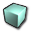 Cube
- The cube builder can be used to create cubes and cuboids (rectangular boxes). Optionally the box can be made hollow and its sides can be tessellated, i.e. subdivided into triangles.
- 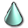 Cone
- The cone builder is actually a pyramid and frustrum builder and can be used to create right pyramids and frustrums with a regular polygon as the base. By default an eight-sided pyramid is created.
- 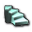 Curved Staircase
- Creates a curved staircase with a flat base that covers an angle of up to 360 degrees.
- 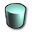 Cylinder
- The cylinder builder actually builds right prisms with a regular polygon as its base. By default an eight-sided prism is created.
- 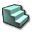 Linear Staircase
- Creates a linear staircase with a flat base.
- Sheet
- The sheet builder creates a square or rectangular sheet that is aligned in X, Y or Z direction and optionally subdivided horizontally and/or vertically into smaller squares or rectangles.
- 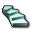 Spiral Staircase
- Creates a curved staircase with a slanted base that can turn more than 360 degrees.
- 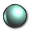 Tetrahedron (Sphere)
- The tetrahedron builder creates a shape that approximates a sphere. It actually never builds a tetrahedron, use the cone builder for that. You can select an extrapolation level from 1 to 5, where 1 is an octahedron, a shape consisting of eight regular triangles. Each additional level subdivides each triangle into four smaller triangles to get closer to the sphere shape.
You should probably use a static mesh instead of high extrapolation levels, though. - 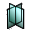 Volumetric (Torches, Chains, etc)
- Before the introduction of emitters and static meshes, this brush builder was used in combination with dynamic textures to create flames. Now flames should be created using emitters and chains should be modeled as static meshes.
CSG operations[edit]
These operations perform basic constructive solid geometry operations with the red builder brush and existing BSP geometry.
- 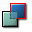 Add
- Creates an additive brush in the level.
- 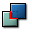 Subtract
- Creates a subtractive brush in the level.
- 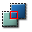 Intersect
- Creates a new builder brush shape by keeping only those parts of the builder brush that intersect with level geometry.
- 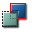 Deintersect
- Creates a new builder brush shape by keeping only those parts of the builder brush that do not intersect with level geometry. Deintersect keeps what Intersect would throw away and throws away what Intersect would keep.
Special add operations[edit]
- 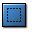 Add Special Brush
- Creates a brush with special properties, for example non-solid and semi-solid brushes. This is a left-over from previous engine generations where BSP geometry needed to be divided into zones to optimize the level and where complex CSG was required because static meshes were not available. You shouldn't use this in Unreal Engine 3 anymore.
- 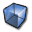 Add Volume (right click for options)
- Creates a Volume with the shape of the builder brush. Right-clicking on the toolbox button brings up a menu with all known volume classes. Usually you will want to add one of those specialized classes, like UTWaterVolume or BlockingVolume.